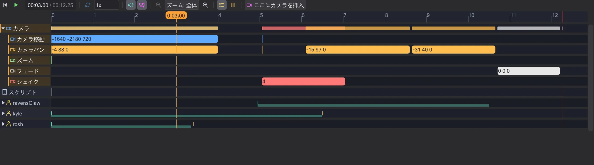

マップとシーン
タイムライン
タイムラインはシーンを再生し、各コマンドがいつ起こるかを示します。ブロックをドラッグするとスクリプトも変わります。

再生#
マップ下の再生ボタン(▶)で再生・停止します。ルーラーをクリックまたはドラッグして時刻を設定します。速度欄でシーンを遅くでき(音は 1x のときのみ)、ループ で繰り返します。ルーラー上のホイールでズーム、トラック上では Ctrl+ホイール。全体 で全体表示、中ボタンでスクロール。単位ボタンでフレームと秒を切り替えます。
行と種類#
カメラ 行にはカメラのコマンド(移動・パン・ズーム・フェード)が入ります。その下に、スクリプトが扱うキャラクターや可動物ごとの行があります。名前の矢印をクリックすると開き、コマンドが 移動・アニメーション・視線・サウンド・状態・進行(wait、シグナル) に分類されます。開始後に何も起こらない行は隠れています。動きのないトラック で表示できます。
wait コマンドは最初は非表示です。それでもすべてを時間に配置しており、ブロックを動かすと自動で調整されます。wait で独立したブロックとして表示します。
ドラッグで時間を変える#
ブロックを左右にドラッグすると、その前の wait が変わり、コマンドが早まったり遅れたりして、その後ろのすべてが一緒に動きます。カメラのブロックは端をドラッグすると長さが変わります。歩行と飛行はキャラクターの行の下端に帯として表示され、同じように時間方向にドラッグでき、歩行を右クリックすると歩く/走るを切り替えられます。
ブロックをクリックするとスクリプトの該当行が選択され、マップもその瞬間へ移動します。タイムライン・スクリプト・マップは常に同じものを示します。
時間はゲームの ICARUS エンジンの再現から得られ、その癖も含みます。
wait は書かれた値より 1 ゲームフレーム(50 ms)遅れて終わり、dowait は指定したタスクを待ちます。時間が分からない場合(waitsignal)は、推測せずにそう表示します。